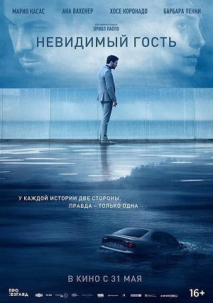

Мировая премьера прошла 23 сентября 2016 года в США, а в Испании фильм был выпущен 6 января 2017 года.
Режиссёром и сценаристом выступил Ориол Пауло.
Музыку сочинил Фернандо Веласкес.
Фильм снимался в городе Тарраса, а также в других местах в Испании — Барселоне и регионе Бискайя.